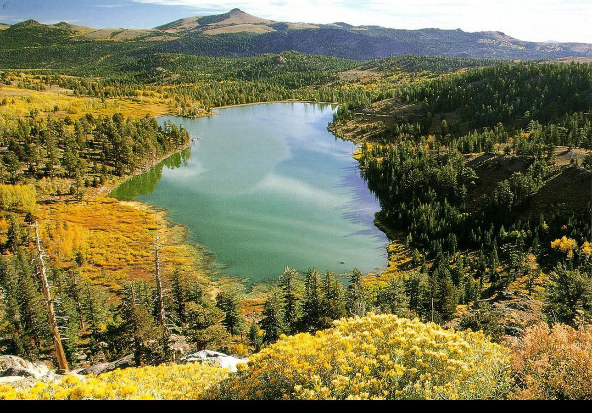
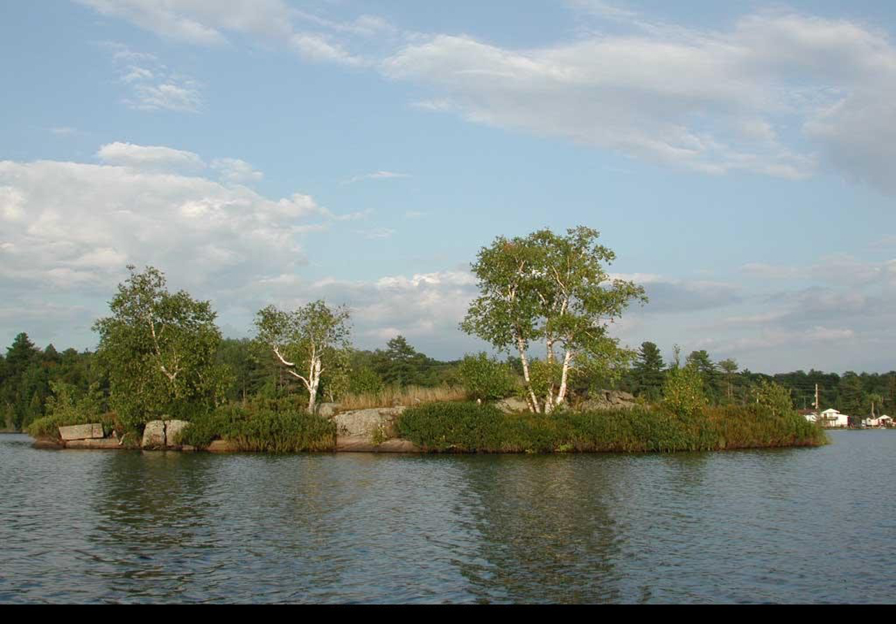
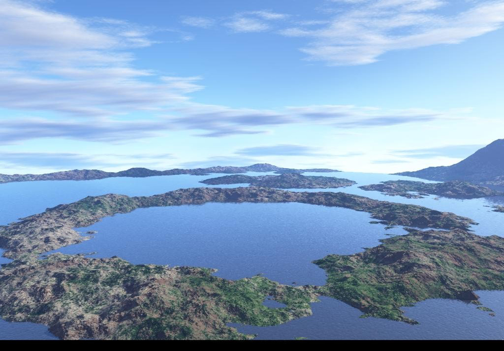
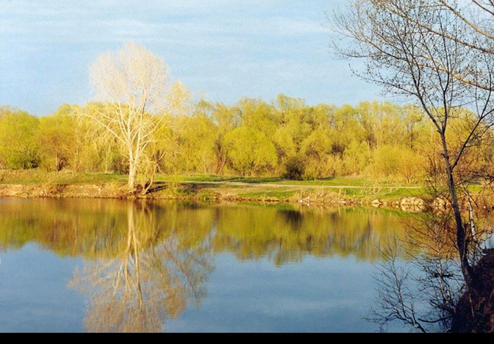

设为首页
/收藏本站
时间：2017/4/26
/天气:多云转晴
首页
景观
美食
游记
风俗
全部
阿坝州

清水潭又名清水泉，位于南宁市金陵镇宁村坡，距离市区大约30公里，无论是自驾或是乘坐大巴都能很方便地到达。清水潭之所以名为清水潭在见到她的第一眼便能够知晓个大概，湖面不宽但却处处清澈，水深之处还呈现出稍有的湖蓝色，落叶漂浮其上别有一番意境。
九寨沟
三月末，四野萧疏时，棋盘山杏花沟内已是十里花海，独成仙境。3月25日，棋盘山第十一届杏花节开幕，漫山遍野杏花斗艳吐芳，山水皆香，向为游人所青睐，摄影爱好者所独钟。随着时间的推移，沟下半先开花，花败后...
黄龙风景区

穿山越海，只为了发现心中的美景 等待寒冬的过去变得有些漫长 但春光大作，西南的风一吹 百里杜鹃转眼间变成了地球上的一个花篮 在春日中我们必须出去旅行，去看看这花花世界 而百里杜鹃在等你 百里杜鹃 3...
长海
大家应该还记得，曾经风靡一时的越南新娘，都是以年轻貌美、任劳任怨、礼金便宜等优点被我天朝广大光棍一族所惦记着。我去越南旅游次数不多，在旅途中看到过的部分越南妹纸们还是如传说中所说的那样——...
三条沟

三四月份，春雨绵绵，偶尔放慢脚步，来一趟汤池，感受不一样的风景！ 蟠桃花开 明媚的春天来了，春姑娘垂柳脱去灰色的衣裳，换上淡绿的外套，让绿色的翡翠飞上枝头，让轻柔的枝条婆娑起舞。 垂柳初芽 站在路的...
镜海

世界何其美好，你要告别苍白和无趣的自己，去见你喜欢的人，去见不一样的风景。 徽州古村落（摄影：行走旅行人生） 春天已经来临，你要到徽州去寻找古老诗词中的遥远梦境。 寻梦徽州（图源：@安徽爱游） 当我...